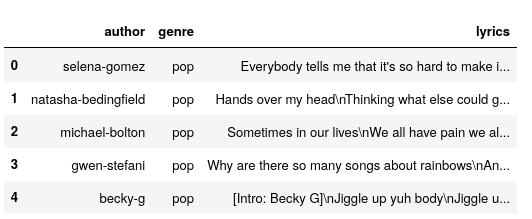
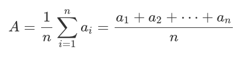
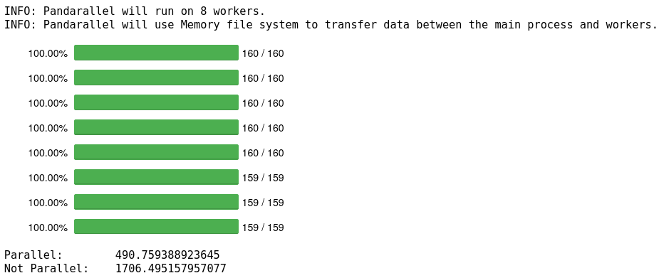
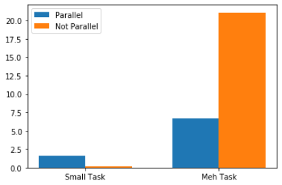
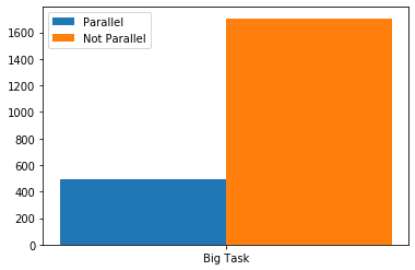

Panda Paralleli
Rendere le operazioni in Pandas più veloci con multiprocessing
aQuante volte sarà capitato di avere un nuovo dataset sotto le mani, appena scaricato o appena finito di mettere insieme con dati presi dal web, e voler subito provare qualche funzione sul dataframe per pulirlo, filtrarlo o aggiungere flags e fare df.apply() e…
Ecco, arrivato ad avere questa esperienza troppe volte mi sono detto: forse dovrei iniziare a vedere come si fa multiprocessing in python e se si può fare in pandas, perchè davvero non posso aspettare 2 minuti solo per fare operazioni fra due serie o due dataframes.
La prima cosa che ho trovato sono stati tanti, e tanti, ma tanti tutorial sul multiprocessing e su come usare il package multiprocessing di Python. Stavo quasi per iniziare ad usare quello, quando ho scoperto che per molte delle cose che faccio posso semplicemente usare tre righe dal modulo concurrent.futures e ottenere lo stesso risultato che si ottiene in 4 con multiprocessing in 3. Entrambi sono moduli inclusi in Python3. Provato e implementato concurrent.futures per task che sono fuori dalla manipolazione dei dataframes, ho deciso di vedere come poter avere risultati simili con questi ultimi e mi sono imbattuto nella libreria pandarallel che si può trovare qui. Ho applicato pandarallel ad un df.apply() che mi richiedeva circa mezz'ora per completare ed il risultato è stato come mettere una nuova marcia che non c'era nella macchina e vedere il tempo attorno alla Fiat Panda del 90' dilatarsi fino a fermarsi.
Gestire operazioni con concurrent.futures
Sto lavorando con un dataset di testi di canzoni, al momento ho circa 10k di testi in un dataframe che riporta anche autore e genere. Ho crawlato e scaricato con degli script tutti questi dati e, dato che sono singoli file, devo creare un unico dataframe dalle directories e file che ho nel sistema. Per far ciò ho una funzione che, però, deve essere eseguita per ogni directory (ce ne sono 4) dove prenderà i file e creerà il dataframe per quel genere musicale.
Nelle righe seguenti potete vedere cosa stavo facendo:
import pandas as pd import os import pickle # to open some dataframes that contain numpy arrays import time import concurrent.futures import numpy as np from nltk.corpus import stopwords from nltk.tokenize import word_tokenize from pandarallel import pandarallel home_dir = os.environ["HOME"] genres = ["pop", "rap", "country", "metal"] # these are also the names of the directories def make_df(genre): df = pd.DataFrame(columns=["author", "genre", "lyrics"]) counter = 0 for _f in list(set(os.listdir(f"{home_dir}/Documents/{genre}/"))): if _f.endswith("MetroLyrics") and not _f.startswith("Lyrs"): author = _f.split("1")[0][:-1] with open(f"{home_dir}/Documents/{genre}/{_f}") as song: song = song.read() if len(song) > 20: df.loc[counter] = [author, genre, song] counter += 1 return df
Questa funzione che crea il dataframe per ogni genere ci impiega un pò troppo ad essere eseguita per ognuno (BEN 67 SECONDI IN TOTALE! Nessuno ha tutto questo tempo.). Usando multiprocessing però, il tempo per la creazione dei dataframes cala notevolmente:
t0 = time.time() dfs = [make_df(x) for x in genres] # create dataframe for each genre print("DFS:\t", time.time()-t0) dfs2 = [] t0 = time.time() with concurrent.futures.ProcessPoolExecutor() as executor: dfs2 = [executor.submit(make_df, x) for x in genres] # create dataframe for each genre dfs2 = [f.result() for f in concurrent.futures.as_completed(dfs2)] print("DFS Parallel:\t", time.time()-t0)
DFS: 67.6477198600769 DFS Parallel: 10.724241256713867
Pandarallel
Ottimo. Adesso però proviamo a fare delle operazioni sul dataframe risultante dalla concatenazione di questi quattro. Per farvi un'idea questo è il df.head() del dataframe che sto utilizzando:

Quello che ora voglio fare è creare una colonna delle lyrics tokenizzate e con le stopwords rimosse. Per fare ciò userò un df.apply sulla colonna delle lyrics e poi rimuoverò, iterando le celle della colonna, le stopwords dalle liste prodotte (iterare le righe/celle di un pandas dataframe non è sempre la cosa migliore da fare, ma sono pigro ed è la prima cosa a cui ho pensato), misurerò la velocità con cui la tokenizzazione è effettutata usando un apply() normale della libreria pandas e poi usando df.parallel_apply() di pandaralell. Da notare che pandarallel ha bisogno di essere prima inizializzato.
pandarallel.initialize() default_stopwords = set(stopwords.words('english')) custom_stopwords = {u'http',u'https',u'-', u"get", u"...", u"'", u"'s", u"n't", u"``", u"''", u"//www", u"'m", u"'re", "would", "could", "like", "should", "can", "'ve'", "the"} all_stopwords = default_stopwords | custom_stopwords import time def tokenize_and_remove_stopwords(df, parallel=False): if parallel == True: t0 = time.time() df = df.parallel_apply(lambda x: word_tokenize(x)) print(f"Tokenized in {time.time()-t0}") else: t0 = time.time() df = df.apply(lambda x: word_tokenize(x)) print(f"Tokenized with parallel in {time.time()-t0}") for cell in range(len(df)): for word in df.iloc[cell]: if word.lower() in all_stopwords: df.iloc[cell].remove(word) return df tokenized_series = tokenize_and_remove_stopwords(lyrics_series) tokenized_series = tokenize_and_remove_stopwords(lyrics_series, True)
>INFO: Pandarallel will run on 8 workers. >INFO: Pandarallel will use Memory file system to transfer data >between the main process and workers. >Tokenized in 21.08686637878418 >Tokenized with parallel in 6.702610969543457
6 secondi invece di 21!
Proviamo adesso con un'operazione molto più semplice, rimuovere canzoni dove le lyrics hanno meno di 4 caratteri, cioè dati sbagliati che non voglio nel dataframe.
t0 = time.time() lyrics_dataframe["to_delete"] = lyrics_dataframe.word_list.apply(lambda x: len(set(x)) < 4) print("Without parallel:\t", time.time()-t0) lyrics_dataframe["to_delete"] = lyrics_dataframe.word_list.parallel_apply(lambda x: len(set(x)) < 4) print("With parallel:\t", time.time()-t0) lyrics_dataframe = lyrics_dataframe.loc[lyrics_dataframe.to_delete == False] lyrics_dataframe.reset_index(drop=True, inplace=True)
> Without parallel: 0.23779726028442383 > With parallel: 1.634167194366455
Il processo parallelo è più lento, questo perchè l'operazione è molto semplice ed il guadagno in tempo del parallelismo non è abbastanza da coprire il tempo che ci vuole ad attuare un processo parallelo probabilmente (?).
Quindi, usare multiprocessing solo su quantità grandi di dati e quando ci sono operazioni più complesse.
Pandarallel su un'operazione lunga:
Per ultima cosa, ho usato pandarallel su un apply che, quando ho usato sul dataframe ad uno stadio più piccolo, già impiegava tra i 20 e 30 minuti per essere completato, adesso lo userò sulla stessa operazione ma con 3 volte il numero di entries nel dataframe. L'operazione consiste nel prendere ogni parola nella colonna word_list e per ognuna di quelle parole trovare il corrispondente word vector (che ho precedentemente creato, cose per un altro articolo) in un altro dataframe dedicato ai word vectors. Presi tutti i word vectors presenti in una canzone, calcolerò il document vector di ogni canzone con la mia tanto incredibile quanto complessa formula:

pandarallel.initialize(progress_bar=True) def get_mean_vector(_input): vectors = [0]*len(_input) for word in range(len(_input)): vectors[word] = dataframe.vector.loc[dataframe.word == _input[word]] return np.mean(vectors) t0 = time.time() vecs = df.word_list.loc[:int(len(df)/10)].parallel_apply(get_mean_vector) print("Parallel:\t", time.time()-t0) t0 = time.time() vecs2 = df.word_list.loc[:int(len(df)/10)].apply(get_mean_vector) print("Not Parallel:\t", time.time()-t0)

491 secondi invece di 1706, risparmiato più di 2/3 del tempo, e questo usandolo solo su un decimo del mio dataset, sul dataset intero in parallelo ci vuole quasi un'ora, se usassi il semplice metodo apply di Pandas probabilmente dovrei lasciare il pc acceso la notte. Ecco una piccola bar chart dei risultati:
 